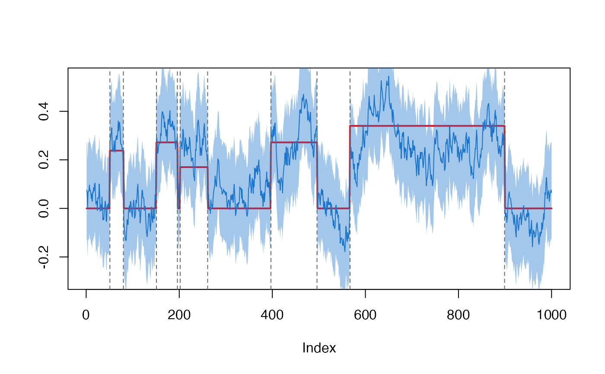
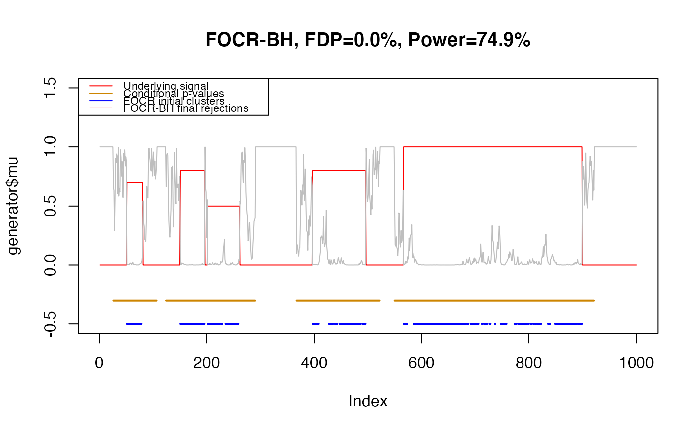
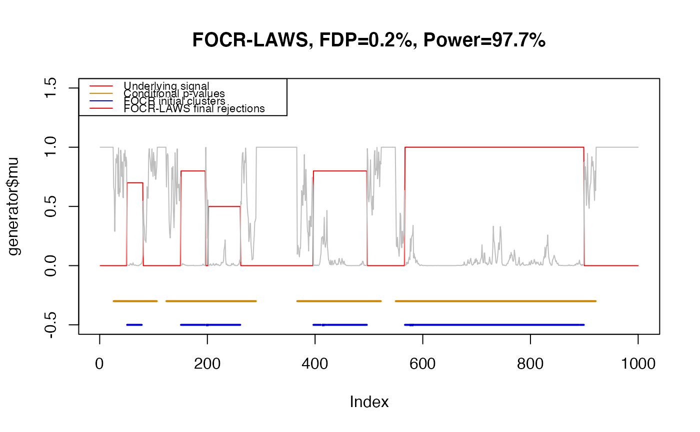

False overlapped-cluster rate (FOCR) control procedures
focr_initial( data, data_corr, blocks, nblocks = ncol(data), mu = 0, alpha = 0.05, verbose = FALSE, side = c("two", "left", "right"), ... ) focr( data, block_size, alpha = 0.05, fdr_method = c("BH", "LAWS", "SABHA", "BY"), bandwidth = if (missing(block_size)) { NA } else { block_size/2 }, initial_filter = 0.9, dimension = NULL, distance_measure = c("euclidean", "lmax", "manhattan"), side = c("two", "left", "right"), verbose = FALSE, blocks, ... )
| data | a n-by-p numerical matrix (no missing values) with |
|---|---|
| data_corr | the correlation matrix of |
| blocks | a list of indices or a function that returns indices |
| nblocks | the total number of blocks, used when |
| mu | the mean function value to compare with; see 'Details' |
| alpha | FOCR level for stage-I, and FDR level for stage-II |
| verbose | whether to print out information; default is false |
| side | test type, |
| ... | passed to |
| block_size | block size of sliding window; used by |
| fdr_method | characters or function of post-selection FDR control
procedures. Built-in choices are |
| bandwidth | used by |
| initial_filter | used by |
| dimension | the dimension information of input hypotheses. For
|
| distance_measure | distance measure used to form blocks; see 'Details'. |
A list of results
methodmethod name
alphalevel of significance: FOCR in the stage-I and FDR in the stage-II
sidepassed from input
blocksfunction that returns indices of blocks
nblocksnumber of total blocks
rej_blocksblocks being rejected
rej_hypothesesindividual hypotheses rejected in the first stage
taup-value cutoff in the first stage
cond_pvalsconditional p-values in the stage-II
uncond_pvalsunconditional p-values
detailsdetails of initial rejections
statsblock-level test statistics and p-values
The following additional items are focr only.
post_selectiona list returned by FDR controlling methods,
see also fdr-controls
fdr_methodfunction used to control the FDR in stage-II
block_sizeblock size if specified, passed from input
The function focr and focr_initial control the type-I error
for multiple testing problems with topological constraints:
$$
H_{0}(s):f(s)=\mu(s), H_{1}(s):f(s)\neq \mu(s)
$$
The type-I error control procedure has two stages. In the first stage, the FOCR is controlled at block (overlapped-cluster) level. This step is to find regions of interests that respect the topological constraints. The second stage further inspects the hypotheses rejected by the first stage. During this stage, conditional p-values will be calculated in a post-selection fashion. FDR control methods are further applied to these conditional p-values to select significant hypotheses at individual level.
Function \(\mu(s)\) is specified in mu. By default the alternative
hypothesis is two-sided. For one-sided tests, please change the parameter
side to either "left" or "right".
The function focr_initial controls the FOCR on the block level
(stage-I), and calculates the conditional p-values. The function focr
uses focr_initial, providing default block settings and built-in
post-selection inference on conditional p-values.
By default, focr uses sliding window as blocks. Each block is a ball
with distance between the boundary and center point given
by block_size/2. The distance measure is specified by
distance_measure. The choices are "euclidean", "lmax",
and "manhattan". This default settings should work in many spatial
or temporal situations. However, in case the blocks are to be customized,
please specify blocks manually. The argument blocks can be
either a list of hypothesis indices, or a function that returns ones given
by locations of hypotheses. See 'vignette'
vignette('false-overlapped-cluster-rate', package='focr').
library(focr) set.seed(100) generator <- simulation_data(n_points = 1000, mu_type = 'step', cov_type = 'AR')#># -------------------- Basic usage ------------------------- # FOCR-BH procedure res <- focr(data = data, block_size = 41, alpha = 0.05, fdr_method = 'BH') # False discovery proportion fdp <- fdp(res$post_selection$rejs, generator$support) fdp#> [1] 0#> [1] 0.7486819# Visualize plot(generator$mu, type = 'l', col = 'red', ylim = c(-.5,1.5), main = sprintf('FOCR-BH, FDP=%.1f%%, Power=%.1f%%', fdp*100, power * 100))legend('topleft', c("Underlying signal", "Conditional p-values", "FOCR initial clusters", "FOCR-BH final rejections"), col = c('red', 'orange3', 'blue'), lty = 1, cex = 0.7)# ------------------------- Change FDR methods -------------------- # FOCR-LAWS res <- focr(data = data, block_size = 41, alpha = 0.05, fdr_method = 'LAWS', initial_filter = 0.5) fdp <- fdp(res$post_selection$rejs, generator$support) fdp#> [1] 0.001795332#> [1] 0.9771529# Visualize plot(generator$mu, type = 'l', col = 'red', ylim = c(-.5,1.5), main = sprintf('FOCR-LAWS, FDP=%.1f%%, Power=%.1f%%', fdp*100, power * 100))legend('topleft', c("Underlying signal", "Conditional p-values", "FOCR initial clusters", "FOCR-LAWS final rejections"), col = c('red', 'orange3', 'blue'), lty = 1, cex = 0.7)# ------------------------- Customized blocks -------------------- # The following example uses disjoint blocks; each block has length of 40 res <- focr(data = data, alpha = 0.05, fdr_method = 'LAWS', initial_filter = 0.5, blocks = function(index){ # Disjoint blocks with size 40 floor((index -1)/40) * 40 + seq_len(40) }, bandwidth = 20) # Compared to overlapped blocks, disjoint blocks are less powerful # However, if this might be useful provided the underlying topological # structure is disjoint fdp <- fdp(res$post_selection$rejs, generator$support) fdp#> [1] 0.001934236#> [1] 0.9068541